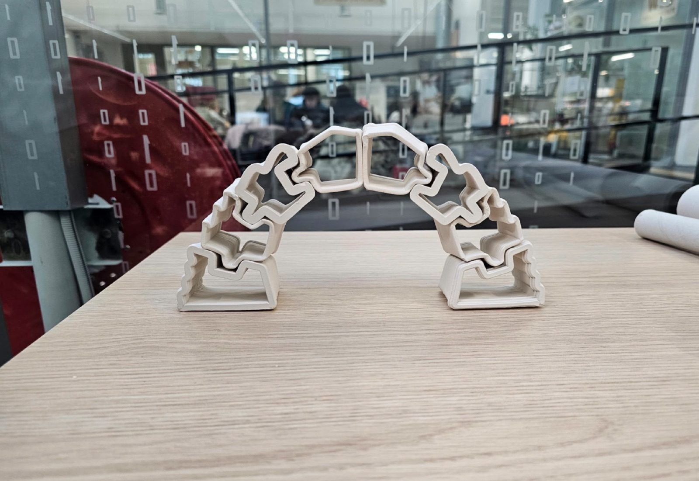

Hittestress-analyse Parkhaven
Kaarten en een hittestressanalyse in ArcGIS Pro voor het masterplan Parkhaven, waarin ik het effect van bomen, groene daken en een groene kade op de gevoelstemperatuur vergelijk.
Leerdoel 3.3
Competentie 3
Persoonlijke leerdoelen en bijsturen
Een van mijn persoonlijke leerdoelen was: “Ik kan een basis Python-script schrijven dat een handige tool is voor een bouwopdracht en mij efficiënter laat werken.” Recent merkte ik dat ik hier niets mee had gedaan. Het was het enige leerdoel waar ik niet aan werkte.
Ik moest mijn leerdoel weer oppakken. Dat sluit aan bij een ander leerdoel van mij: tijdig bijsturen als ik vastloop, in plaats van te stoppen en af te wachten.
Ik ging in gesprek met mijn begeleider en vertelde dat ik Python opzij had gelaten. Hij stuurde mij een aantal video's. Daarna gaf hij mij de opdracht om hetzelfde vakwerk dat ik in Grasshopper had gemaakt opnieuw te maken, nu met de ingebouwde Python in Grasshopper.
Ik heb het vakwerk in Python gebouwd. Mijn begeleider merkte op dat ik dit heel snel heb gedaan en noemt mijn ontwikkeling veelbelovend.
Ik heb geleerd dat ik een leerdoel dat blijft liggen sneller moet bespreken. Mijn begeleider adviseert bij Python te letten op structuur en overzichtelijkheid van de code, vooral variabelenamen en opmerkingen. Dat helpt mij later bij het terugkijken.
Mijn leerdoel is nog niet helemaal behaald, want ik heb een vakwerk gebouwd, maar nog geen tool die mij efficiënter laat werken. Mijn volgende stap is een klein script dat een terugkerende handeling in mijn werk automatiseert.
Aangetoond in
Zelflerende houding
Voor mijn leerplek had ik als doel Grasshopper en Python te leren.
Ik wilde beide zelf eigen maken.
Voor Grasshopper begon ik met cursussen op ThinkParametric. Daarna maakte ik een opdracht van mijn begeleider, waarin ik vakwerken maakte en deze koppelde aan Karamba en Technosoft. Voor Python gebruikte ik de ingebouwde Python in Grasshopper om een vakwerk te maken. Bij beide zocht ik eerst zelf uit en stelde ik vragen als ik vastliep.
Mijn begeleider ziet een positieve houding ten opzichte van leren en uitproberen. Hij zegt dat ik oprecht geïnteresseerd lijk in digitale vaardigheden, advies opvolg en best zelfstandig werk.
Ik heb echt een zelfstandige houding. Ik hou van zelf uitzoeken en oplossen. Mijn begeleider adviseert om meer vragen te stellen en aan te geven of ik iets nieuws of anders wil zien of uitproberen. Dat ben ik met hem eens. Daarom ga ik mijn vragen opschrijven en ze niet meer direct zelf opzoeken, maar gewoon stellen.
Aangetoond in
Zelfstandig nieuwe tools eigen maken
Voor project 2 ontdekte ik een template die gekoppeld is aan de kleiprinter. Op mijn leerplek leerde ik daarnaast zelfstandig nieuwe tools.
Ik wilde deze tools toepassen in mijn projecten en op mijn leerplek.
Dankzij mijn Grasshopper-kennis kon ik de printer-template makkelijk gebruiken. Voor de template heb je een vorm nodig die je koppelt, en het maken en aanpassen van die vorm in Rhino duurde mij langer. Karamba leerde ik via een cursus op ThinkParametric. Daarna bouwde ik zelfstandig mijn vakwerken op en paste toe wat ik van Karamba had geleerd. Ook Python leerde ik en paste ik toe in de ingebouwde Python in Grasshopper, waardoor ik een vakwerk met alleen Python kon bouwen.
Ik kan nu zelfstandig tools oppakken en toepassen. Mijn begeleider noemt mij bereid om dingen zelf verder te ontwikkelen.
Ik heb Grasshopper geleerd maar Rhino niet echt, waardoor ik soms niet weet hoe ik iets in Rhino moet doen. Ook al kun je veel met Grasshopper, soms moet je Rhino volledig gebruiken. Daarom wil ik mijn Rhino-skills aanscherpen door YouTube-video's te kijken en een oefenopdracht te doen. Voor januari maak ik een kleine Rhino-opdracht.
Aangetoond in
Leerdoelen gebruikt: 3.1, 3.2 en 3.3 (persoonlijke leerdoelen PD2, PD4 en PD5)
Ik moest in korte tijd nieuwe tools leren: ArcGIS Pro en Tygron voor de hittestressanalyse in het project, en Python op mijn leerplek. Mijn persoonlijke leerdoelen waren tijdig bijsturen als ik vastloop, in mijn eigen tijd nieuwe tools leren en een basis Python-script schrijven. Mijn startsituatie was dat ik vaak afwachtend was en dat ik nog geen programmeerervaring had.
Ik moest deze tools zelf onder de knie krijgen om bij te dragen aan het project en aan mijn werk op de leerplek.
In ArcGIS Pro liep ik vast op een foutmelding bij het clippen van een laag. Ik zocht met AI uit wat de oorzaak was en maakte aantekeningen met wat ik leerde en shortcuts. Daarna probeerde ik Tygron voor de hittestressanalyse, maar dat kreeg ik niet onder de knie. Ik stapte over op ArcGIS Pro en experimenteerde later opnieuw met Tygron, wat een beetje lukte. Ook maakte ik via een Esri-cursus mijn eigen 3D-scene in ArcGIS Online.
Op mijn eerste dag bij mijn leerplek zag ik projecten met Grasshopper en Python en begon ik aan een Python-cursus. Na een tijdje merkte ik dat ik er verder niets mee had gedaan. Ik besprak dat met mijn begeleider. Hij stuurde video's en gaf mij de opdracht om hetzelfde vakwerk dat ik in Grasshopper had gemaakt opnieuw te bouwen met de ingebouwde Python in Grasshopper. Lastig was hoe de componenten als code werken, dus hoe je die in een script zet. Ik loste dat zelf op door verschillende manieren te testen en Copilot om uitleg te vragen, maar niet om het script zelf te schrijven. Daarna ging het best makkelijk.
In ArcGIS Pro maakte ik vier kaarten waarin bomen, groene daken, een groene kade en alle maatregelen naast elkaar staan. Tygron lukte deels. Het vakwerk in Python heb ik gebouwd en mijn begeleider merkte op dat ik dat heel snel deed. Hij noemt mijn ontwikkeling veelbelovend.
Vroeger stopte ik als ik vastliep. Nu stuur ik bij: bij Tygron veranderde ik van aanpak in plaats van op te geven en bij Python bracht ik het zelf ter sprake. AI hielp me uitzoeken, maar ik leerde pas echt door aantekeningen te maken en het zelf opnieuw toe te passen.
Mijn Python-scripts zijn nog niet netjes gecodeerd, maar ze werken wel. Mijn begeleider adviseert te letten op structuur en overzichtelijkheid, vooral variabelenamen en opmerkingen, zodat ik later makkelijk kan terugkijken. Hij ziet ook een positieve houding en dat ik zelfstandig werk, maar adviseert meer vragen te stellen en aan te geven wat ik nog wil zien of proberen. Daarom schrijf ik mijn vragen op en stel ik ze gewoon, in plaats van ze direct zelf op te zoeken.
Mijn Python-leerdoel is nog niet helemaal behaald: ik heb een vakwerk gebouwd, maar nog geen tool die mij efficiënter laat werken. Mijn volgende stap is een klein script dat een terugkerende handeling automatiseert. Verder maak ik voor januari een kleine Rhino-opdracht om mijn Rhino-skills aan te scherpen.
Kaarten en een hittestressanalyse in ArcGIS Pro voor het masterplan Parkhaven, waarin ik het effect van bomen, groene daken en een groene kade op de gevoelstemperatuur vergelijk.
Leerdoel 3.3

Een parametrisch script met vier soorten vakwerken, doorgerekend met Karamba3D en geëxporteerd naar Technosoft Raamwerken, gemaakt op mijn leerplek bij ABT.
Leerdoelen 3.2, 3.3

Uitzoeken hoe de kleiprinter werkt, de printbestanden voorbereiden met de Termite-template en de kleiblokken van het gekozen ontwerp printen, voor project 2 (digitale fabricage).
Leerdoel 3.3

Hetzelfde vakwerk als in mijn Grasshopper-script, opnieuw opgebouwd met alleen Python-code in de ingebouwde Python van Grasshopper.
Leerdoelen 3.1, 3.3

Een parametrisch model van de Van Brienenoordbrug in Grasshopper: in september lukte alleen de boog, in november bouwde ik zelfstandig de hele brug.
Leerdoel 3.2